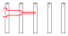
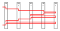
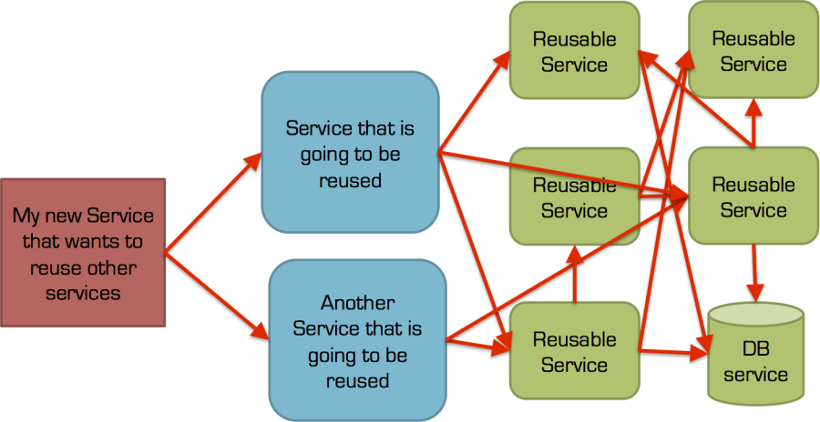
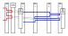
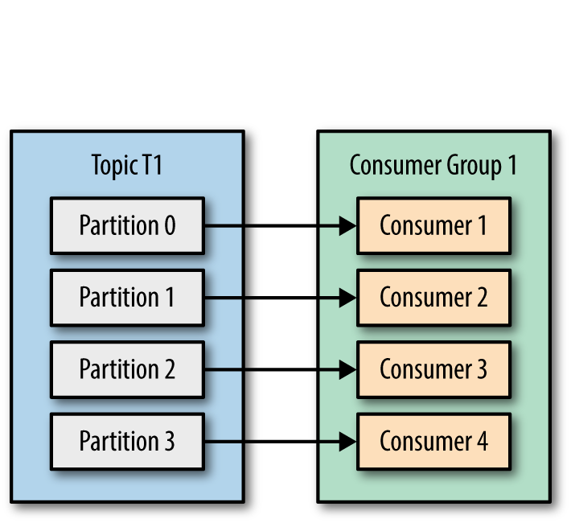
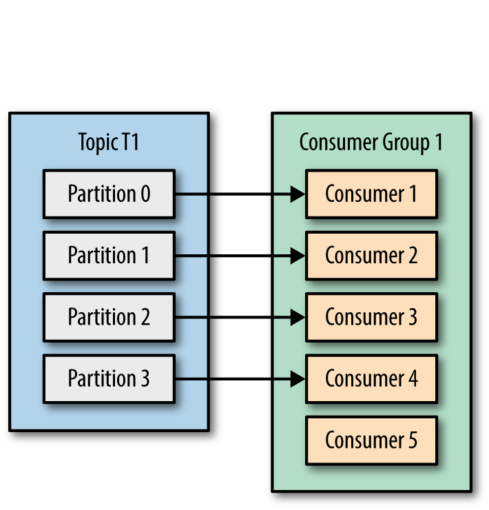
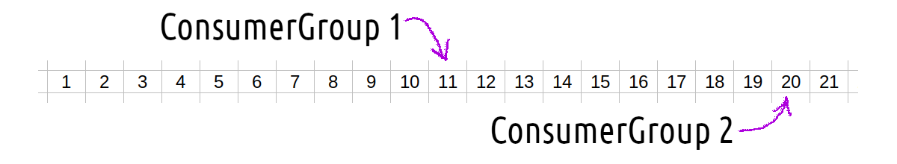
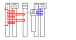
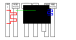

What is
 Kafka?
Kafka?
Distributed Streaming Platform
Распределённый брокер сообщений
Распределенная система передачи сообщений
What is
Kafka?
Distributed Streaming Platform
Распределённый брокер сообщений
Распределённая система передачи сообщений
Apache Kafka — это распределенная система обмена сообщениями с высокой пропускной способностью, которую можно использовать для упрощения масштабируемого сбора данных. [↪]
Alternatives for Kafka
RabbitMQ
ActiveMQ
NUTS
Pulsar
NSQ
Kafka for what???
Messaging
Metrics
Website Activity Tracking
Log Aggregation
Stream Processing
Event Sourcing
Commit Log
Kafka for what???
Queue

Microservices: Synchronous Communication
( REST / gRPC / HTTP )

Microservices: Synchronous Communication
( REST / gRPC / HTTP )

Microservices: Coupling and Cohesion

Microservices: Async Communication (Celery)

Microservices: Async Communication (Kafka)

Kafka: Partitions

Kafka: Partitions (P<C)

Kafka: Partitions (P=C)

Kafka: Partitions (P>C)

Kafka: Partitions: few consumer groups

Kafka: Replication

Kafka: Schema
key, value
byte[], byte[]
Kafka: Replication
Kafka: Schema
Use Avro to define a data schema
Kafka: Schema: Avro
{ "namespace":"com.example.avroSample.model",
"type":"record",
"name":"Automobile",
"fields":[ { "name":"modelName",
"type":"string"},
{ "name":"modelYear",
"type":"int"}
]
}
Kafka: Schema: Avro: Schema Registry
Kafka: Consumers Offsets

Microservices: Async Communication (Kafka). Again
Microservices: Async Communication. Few Details

PostgreSQL → Kafka

Stream data from PostgreSQL to Kafka

Microservices: Async Communication. Few Details

А как же питон?
Kafka-related libraries for Python
confluent-kafka
aiokafka
fastavro